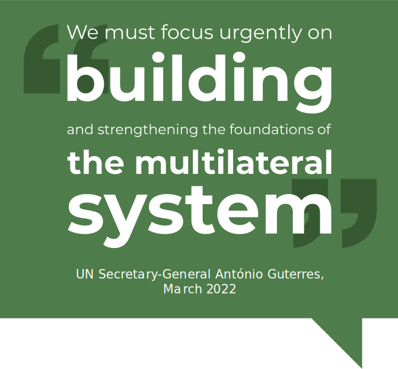

United Nations In Indonesia
Country Results Report 2021
Our Common Agenda

Even before COVID-19, the UN Secretary- General characterized multilateralism as facing its greatest threat in decades at a time when the world is most in need of cooperation. But the pandemic has put beyond all doubt the fact that multilateral approaches are essential to surmounting challenges that are increasingly global in nature. “If we are to bequeath to future generations a world free from want and fear, and full of opportunities to fulfil their potential,” Guterres said in March 2022, “we must focus urgently on building and strengthening the foundations of the multilateral system.”
The imperative to shore up multilateralism was the driving force behind the Secretary- General’s launch of “Our Common Agenda,” at the UN General Assembly in September 2021. Our Common Agenda is a shared plan of action designed to accelerate the implementation of the international community’s existing agreements— including the SDGs—that puts multilateralism at its core. It asserts that between the COVID-19 crisis and the looming climate emergency, the world is at an inflection point. The decisions and actions we take today will determine whether we proceed to “breakthrough” or “breakdown,” with the latter characterized by a collapse of the global order, war and violence, more pandemics and climate extremes, and a world in perpetual crises.
The Secretary General’s report on Our Common Agenda proposes a “Summit of the Future” in 2023 to advance ideas for governance arrangements in areas that could be considered global public goods or commons, including climate and sustainable development beyond 2030, the international financial architecture, peace, outer space, and the digital space.